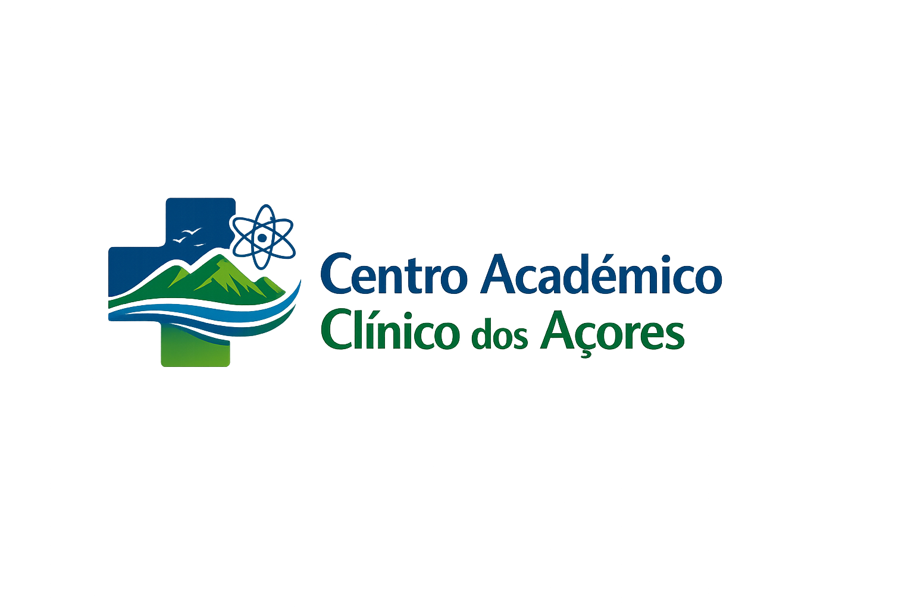

Parceiros
Seguem-se algumas das parcerias institucionais associadas à atividade do CACA:



O Centro Académico Clínico dos Açores (CACA) tem como missão integrar unidades de saúde, ensino superior e investigação científica, promovendo a melhoria contínua da qualidade dos cuidados de saúde prestados à população açoriana.
O CACA aposta na aplicação da evidência científica, no desenvolvimento de investigação clínica e de translação, na inovação dos cuidados de saúde e na formação de profissionais altamente qualificados, com especial enfoque nos domínios críticos e nas doenças com maior incidência na região.
Promoção de cuidados de saúde de elevada qualidade, baseados na evidência científica e orientados para as necessidades da população.
Formação avançada e contínua de estudantes e profissionais de saúde, reforçando a ligação entre ensino, prática clínica e investigação.
Desenvolvimento de investigação clínica e de translação, com foco na inovação e na resposta aos desafios de saúde da região.
Desenvolvimento e aplicação de soluções digitais para melhorar o acesso, a eficiência e a qualidade dos cuidados de saúde na Região Autónoma dos Açores.
Investigação e implementação de sistemas baseados em inteligência artificial para apoio ao diagnóstico, à decisão clínica e à gestão dos cuidados de saúde.
Promoção de modelos de prestação de cuidados à distância, reduzindo barreiras geográficas e reforçando a equidade no acesso aos serviços de saúde.
Seguem-se algumas das parcerias institucionais associadas à atividade do CACA:
O Centro Académico Clínico dos Açores disponibiliza regularmente oportunidades de estágios, projetos, teses e bolsas de investigação, promovendo a participação ativa de estudantes e investigadores nas suas iniciativas científicas e tecnológicas.